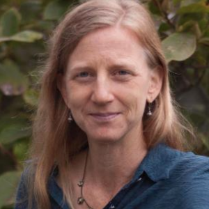
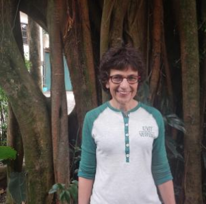
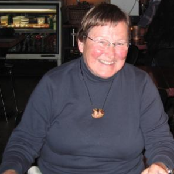
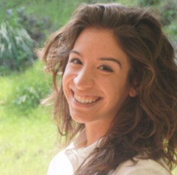
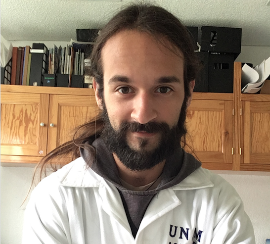

President, Jennie Mollica
 Jennie Mollica is from the United States but lives in Monteverde with her family. Wherever she is, Jennie expresses compassionate and directed interest in helping others. At the Monteverde Institute, she has been a volunteer English teacher for homestay families and other community members. In her other home in California, Jennie has worked in the areas of refugee and immigrant services, employment and training services, and community college education. Jennie has degrees in French and in Public Administration and is currently working on a degree in Teaching English as a Second Language.
Vice-President, Laurie Kutner
 Laurie Kutner is a Library Associate Professor at the University of Vermont who also serves as a faculty in the Environmental Studies Program. Laurie has worked on several projects with libraries in Costa Rica and Peru. Her interests in disparities in information access on a global scale derive from the work she has done at the Monteverde Institute for over 10 years supporting the library, building digital collections to provide access to locally-based research-based materials, and more recently, speaking with students regarding inequities in access and production of scholarly information from a Latin American perspective.
Secretary, Leslie Burlingame
 Leslie Burlingame is a science and environmental historian who has been visiting Monteverde since 1991. She took (1992) a short course on rainforest ecology and conservation through the Monteverde Institute (MVI) and began research on conservation organizations in Costa Rica, including the MVI. Some of her findings appeared in Narkarni and Wheelwright (eds.), Monteverde: Ecology and Conservation of a Tropical Cloud Forest. She is a retired professor in the Science, Technology, and Society Program at Franklin and Marshall College in Lancaster, Pa., and writes histories of MVI and other conservation and educational organizations in Monteverde.
Treasurer, Ashley Gora
 Ashley Gora is the Development Manager for Big Sur Land Trust in Monterey, California. She previously worked as the Interns & Research Affiliates Coordinator for the Monteverde Institute during her post-university fellowship from January 2014 to July 2015. Before then, she carried out two internship experiences through the Institute while researching sustainable tourism in the Monteverde region for her senior thesis at Lake Forest College. Ashley volunteers near Salinas, California for the Toro Creek MAPS bird banding station in partnership with the Ventana Wildlife Society and Monterey Audobon Society. She is fluent in Spanish and graduated in 2017 from the Middlebury Institute of International Studies with a dual MA/MBA in International Environmental Policy and Social Enterprise & Finance.
Member at Large, Dr. Luis Carlos Beltrán
 Dr. Beltrán is a tropical biologist who specializes in tropical restoration ecology. During his undergraduate career at Lake Forest College, Dr. Beltrán participated in a number of internships and volunteer opportunities with the Monteverde Institute — one of those opportunities culminated in his undergraduate thesis on the post-dispersal seed fate of a local wild avocado species. Following his BA in 2015, he obtained his PhD from the University of Illinois at Chicago in 2021. Currently, Dr. Beltrán is a postdoctoral researcher at the Pontificia Universidad Javeriana in Bogotá, Colombia. His research and interests continue to center around tropical restoration ecology and seed dispersal.